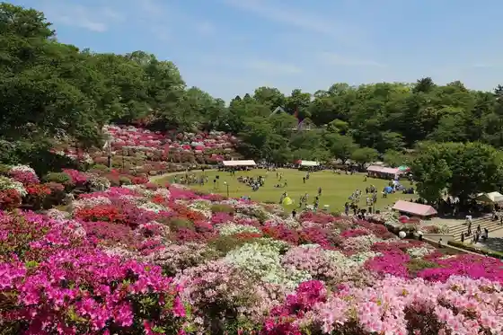
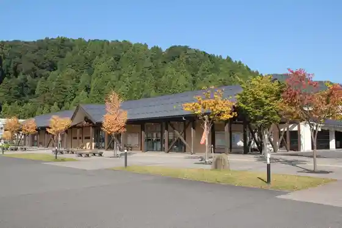
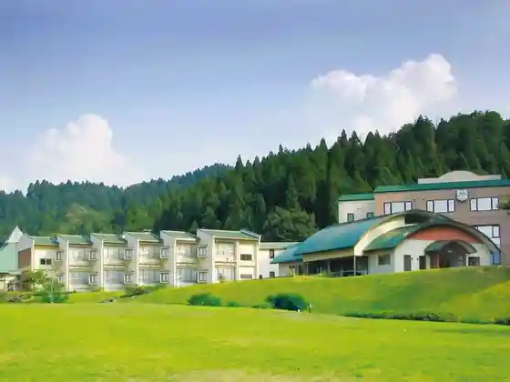

Megane Museum
Sabae, Fukui · 0778-42-8311 · Official / source link
Nishiyama Park
Sabae, Fukui · 0778-51-1001 · Official / source link

Nishiyama Zoo
Sabae, Fukui · 0778-52-2737 · Official / source link
Urushi no Sato Hall
Sabae, Fukui · 0778-65-2727 · Official / source link

Kawada Onsen Rapoze Kawada
Sabae, Fukui · 0778-65-0012 · Official / source link

Roadside Station Nishiyama Park
Sabae, Fukui · 0778-51-8181 · Official / source link
Makoto City
Sabae, Fukui · 0778-51-2800 · Official / source link
Nishiyama Park no Tsutsuji
Sabae, Fukui · 0778-51-1001 · Official / source link
Nishiyama Park no Autumn Leaves
Sabae, Fukui · 0778-51-1001 · Official / source link
Panda Land Boken Forest (Nishiyama Park)
Sabae, Fukui · 0778-51-1001 · Official / source link
Honzan Makoto Sho Tera
Sabae, Fukui · 0778-51-0139 · Official / source link
Sabae Kyo Yo Hall
Sabae, Fukui · Official / source link
Manabe no Kan
Sabae, Fukui · 0778-51-5999 · Official / source link
Funatsu Shrine
Sabae, Fukui · 0778-51-0966 · Official / source link
Sabae Chiiki Koryu Center (Shimin Horu Tsutsuji)
Sabae, Fukui · 0778-54-7000 · Official / source link
Sanroku Onsen Jinmei En
Sabae, Fukui · 0778-52-5165 · Official / source link
Sabae Bunka Center
Sabae, Fukui · Official / source link
Musubi no Chaimu (Nishiyama Park)
Sabae, Fukui · 0778-51-1001 · Official / source link
Man Yoshi Tera
Sabae, Fukui · 0778-51-0481 · Official / source link
Ishida Shima Teori Ri Center (Sabae Sen'i Hall)
Sabae, Fukui · 0778-52-1880 · Official / source link
O Yama Kofun Gun
Sabae, Fukui · 0778-51-5999 · Official / source link
Sabae Sogo Gym
Sabae, Fukui · Official / source link
Sabae Han Karo Ueda Kacho Ya Mon
Sabae, Fukui · Official / source link
Nishi Ban Supotsu Center
Sabae, Fukui · 0778-52-3866 · Official / source link
Nishiyama Park Cherry Blossoms
Sabae, Fukui · 0778-51-1001 · Official / source link
Jizo Hashi
Sabae, Fukui · Official / source link
Kabutoyama Burial Mound
Sabae, Fukui · 0778-51-5999 · Official / source link
San Ba Saka Shimizu
Sabae, Fukui · 0778-53-2227 · Official / source link
Ka Ta Shiba Shrine
Sabae, Fukui · Official / source link
Togen Shimizu
Sabae, Fukui · 0778-53-2227 · Official / source link
Nokishita Workshop
Sabae, Fukui · 0778-65-0030 · Official / source link
Kyu Uryu Ie House
Sabae, Fukui · 0778-51-5999 · Official / source link
Mibu Oi Cho Plaza
Sabae, Fukui · 0778-53-2230 · Official / source link
Saito Mi Juro Ie no Hiiragi
Sabae, Fukui · Official / source link
Kinsho Monzaemon no Hi
Sabae, Fukui · 0778-51-3376 · Official / source link
Eko Farm Fune Eda (Na no Hanahata)
Sabae, Fukui · 0778-53-2232 · Official / source link